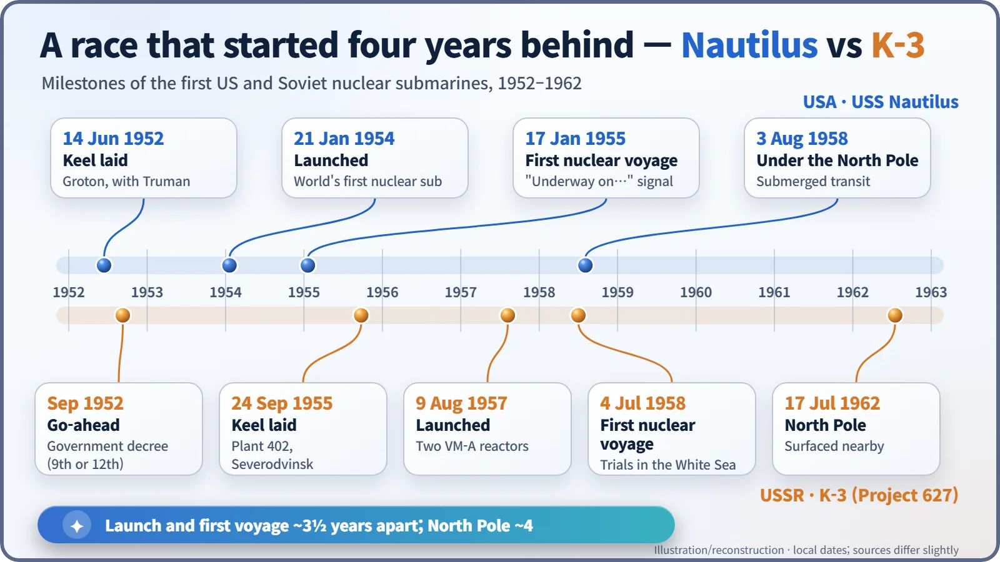
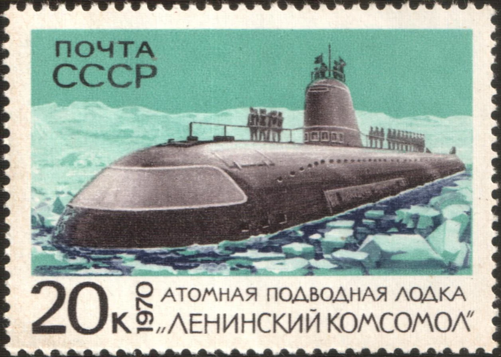
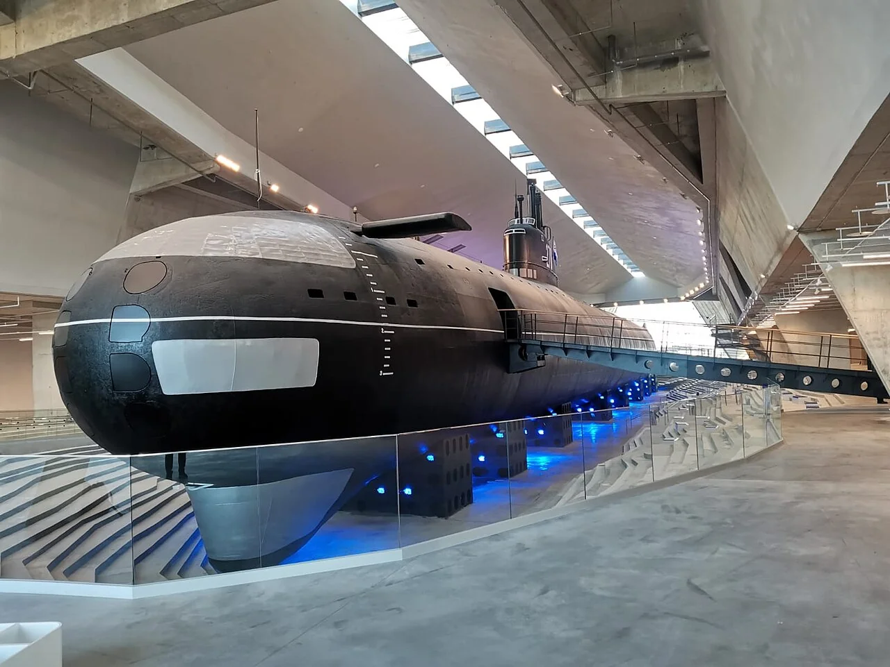

Nuclear History · 159
Two Reactors Instead of One Giant Torpedo — K-3 "Leninsky Komsomol," the First Soviet Nuclear Submarine
Conceived around a single giant torpedo, the boat went to sea with two pressurized-water reactors and spent almost 30 years in service before ending up in a museum hall.
The Soviet Union's first nuclear submarine, K-3, began life in 1952 as a carrier for a single giant nuclear torpedo, the T-15. The navy rejected that idea, and the boat was rebuilt as an attack submarine driven by two pressurized-water reactors. It first moved on nuclear power on 4 July 1958, reached the North Pole on 17 July 1962, earned the name Leninsky Komsomol, and today rests in a museum hall in Kronstadt.
The submarine that was meant to fire one shot
Had the first drawings been built as drawn, this submarine's bow would have held a single launch tube more than 1.5 metres across. Inside it would have sat one weapon: the T-15, a nuclear torpedo more than 20 metres long. The boat's whole job would have been to creep up to an enemy harbour and fire that one shot. The ship that actually went to sea looked very different. This is the story of K-3, the Soviet Union's first nuclear-powered submarine, later named Leninsky Komsomol.
September 1952: a decision at the end of the Stalin era
In September 1952 the Soviet Council of Ministers ordered the design and construction of a nuclear submarine under the code name "Object 627." Sources disagree on the exact day: some give the 9th, others the 12th. By then the United States had already laid the keel of USS Nautilus, in June of that year.
The chief designer was Vladimir Peregudov (1902–1967), an experienced designer of diesel submarines; the scientific lead was the physicist Anatoly Alexandrov (1903–1994). [3]
The one-shot submarine the navy turned down
When the navy's leadership reviewed the design in 1954, it was unimpressed. Slipping unseen into an enemy harbour would be hard, and a boat that staked everything on one torpedo was of little military use. The T-15 was abandoned (sources date its cancellation to 1954 or 1955), and Project 627 was redesigned as an attack submarine with eight ordinary 533 mm bow torpedo tubes and 20 torpedoes. [5]
The weapons became ordinary; the heart did not. K-3 carried two VM-A pressurized-water reactors of 70 megawatts of thermal power each. In a pressurized-water reactor the cooling water is kept under such high pressure that it cannot boil while it carries heat out of the core; that heat then turns water in a separate loop into steam to drive the turbines. Because nothing needs air, the boat can stay submerged for weeks. Two turbine sets delivered 35,000 horsepower in total, and the top speed submerged was 30 knots (about 56 km/h). [4]
A White Sea summer: moving on atomic power
The two crews trained on reactor operation at shore facilities in Obninsk from 1954. The hull was laid down at Plant 402 in Severodvinsk on the White Sea (today's Sevmash shipyard) on 24 September 1955, with 135 enterprises contributing to the work. K-3 was launched on 9 August 1957, and its reactors were first started that September. [1]
Then, on 4 July 1958, under her first commander, Leonid Osipenko, K-3 got under way in the White Sea on nuclear power for the first time. It came about three and a half years after Nautilus had signalled "Underway on nuclear power."

When was it commissioned? It depends whom you ask
There is no single answer. The naval ensign was raised on 1 July 1958; on 17 December 1958 the navy accepted the boat on condition that its defects be fixed; and it joined a fleet formation in March 1959. Different sources pick different steps as the "commissioning date." As befits a first-of-a-kind boat rushed to sea, K-3 suffered frequent breakdowns early on, including steam-generator problems, and during a major overhaul in 1963–1965 its entire reactor section was replaced. [1] [5]
17 July 1962: a name earned at the North Pole
On 17 July 1962, K-3, commanded by Lev Zhiltsov, reached the North Pole under the ice, passed over the pole twice and surfaced nearby. No Soviet submarine had done it before. It came about four years after Nautilus, but for Moscow it was a sign that the gap was closing.
On 9 October that year the boat was named Leninsky Komsomol, after the Communist youth league (the Komsomol), and in 1970 it appeared on a postage stamp. [4]

The 1967 fire
On 8 September 1967, while K-3 was at sea in the Norwegian Sea, fire broke out in its first and second compartments, near the bow, and 39 crew members died. It was a fire in the hydraulic system, not a reactor accident. The first investigation concluded that a non-standard gasket had been fitted in place of a copper ring in a high-pressure hydraulic fitting, so that hydraulic fluid sprayed out and ignited. A later commission in Moscow reportedly blamed a sailor's smoking instead, so accounts of the cause still differ. In 2014 the 39 men were posthumously awarded the Order of Courage. [2] [5]
From the fleet to a museum hall
Over its career K-3 completed six combat patrols and four long-range cruises and sailed 128,443 nautical miles. It was removed from active service in October 1987; sources put its final retirement anywhere from 1988 to 1991. After its fuel was removed in 2002, the decision was made to preserve it rather than scrap it. In 2021 it was towed to Kronstadt, near St Petersburg, and since 2023 it has been on display at the Museum of Naval Glory. [1]

What the four-year gap left behind
K-3 was not a copy of Nautilus. The Soviet decision to build it came before Nautilus was launched, and its reactors and hull were developed independently. The pressure to catch up was real, though, and the price of haste came back as frequent breakdowns. Still, a boat that nearly became a one-shot weapons carrier ended up sailing for almost 30 years before coming to rest in a museum hall, a quiet reminder of the Cold War's technology race.
![Life of K-3 in twelve cards: go-ahead September 1952 as a carrier for the T-15 torpedo; 1954 redesign with eight 533 mm tubes; launched 9 August 1957; first nuclear voyage 4 July 1958; navy acceptance 17 December 1958; North Pole 17 July 1962 and named Leninsky Komsomol on 9 October; reactor section replaced 1963 to 1965; fire with 39 dead on 8 September 1967, not a reactor accident; out of service 1987 to 1991; fuel removed 2002; moved to Kronstadt 2021 to 2022; museum exhibit 2023. Statistics: 128,443 nautical miles, 6 combat patrols, 4 long-range cruises, reactors 2 x 70 MW](../../assets/images/history/159-soviet-k3-submarine/fig2-k3-lifeline.webp)